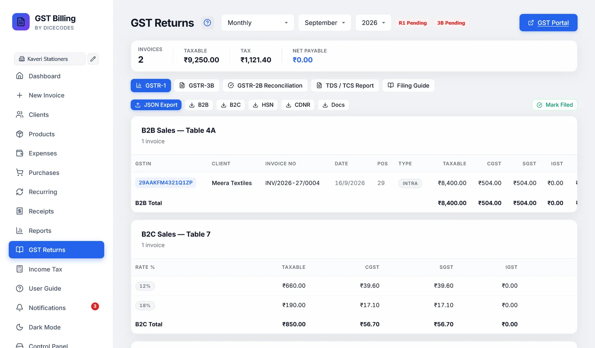
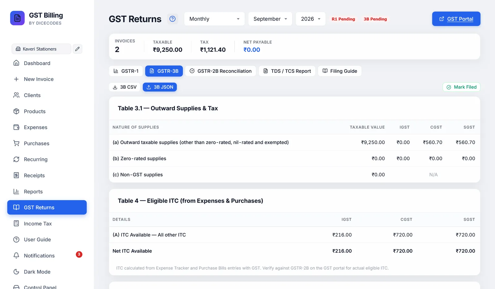

GST returns
GSTR-1 and GSTR-3B built from the invoices, purchases and expenses you have already entered, checked against GSTR-2B, and ready to upload to the GST portal.
The app works out the figures and makes the files. It does not log in to the GST portal. Filing is always done by you, or your CA, on gst.gov.in.
#Choosing the period
At the top, pick Monthly, Quarterly (QRMP) or Full Year:
- Monthly: a month and year. This month to start.
- Quarterly: Q1 (Apr-Jun), Q2 (Jul-Sep), Q3 (Oct-Dec) or Q4 (Jan-Mar), and a year. The year is the calendar year of those months, so the Jan-Mar 2027 quarter is Q4 with 2027.
- Full Year: a financial year, such as FY 2026-27.
Everything on the screen follows the period and the business selected in the sidebar.
#What is included
- GSTR-1 and GSTR-3B use tax invoices and credit notes only.
- Proforma estimates, bills of supply, composition bills and delivery challans are left out. So are cancelled invoices.
- The Documents issued table lists every kind of document you numbered, as the portal asks.
- Input tax credit comes from your purchase bills and expenses with GST.
#Filed status, portal link and warnings
- R1 Filed / R1 Pending and 3B Filed / 3B Pending: green when filed, red when not. Click to switch, if you marked one by mistake. The status is kept in this browser, for each business and period.
- GST Portal opens gst.gov.in.
- A red box lists problems to fix first, such as a client GSTIN in the wrong format, your own GSTIN missing, or export invoices that need adding on the portal by hand.
- If the period has no invoices and no expenses, a banner reminds you to file a NIL return.
- The strip shows Invoices, Taxable value, Tax and Net Payable for the period.
#GSTR-1: your sales
The GSTR-1 tab lays your sales out in the portal's tables:
| Table | What is in it |
|---|---|
| B2B Sales (4A) | Invoices to GST-registered clients, one row each: GSTIN, client, number, date, place of supply code, Inter or Intra, taxable value, CGST, SGST, IGST and total |
| Credit/Debit Notes (9B) | Credit notes, to registered clients or marked Unregistered |
| B2C Sales (7) | Sales to unregistered buyers, added up the way the portal's Table 7 takes them: one row for each supply type (intra-state or inter-state), place of supply (such as 10-Bihar) and tax rate. Inter-state B2C invoices above ₹1 lakh (₹2.5 lakh for invoices before 1 August 2024) are B2C Large (Table 5); they are listed under it, invoice by invoice. An inter-state sale whose place of supply is missing or is your own state is flagged in red: open the invoice and set the buyer's state. |
| Document Summary (13) | Invoices, credit notes and delivery challans issued, one row for each number series, with the first and last number, the total and how many were cancelled. Quotations and proformas are not reported. |
| HSN Summary (12) | Quantity, taxable value and tax for each HSN code. Items with no HSN show as N/A. |
| Document Summary (13) | For each document type, the first and last number, how many were issued and how many of those were cancelled |
| Summary Totals | B2B and B2C together, less credit notes |
Exports to clients abroad are not in the GSTR-1 file. The red box lists them: add them in Table 6A on the portal with the shipping bill details.

#GSTR-1 downloads
| JSON Export | The file you upload to the portal: GSTR1_GSTIN_MMYYYY.json. See Checks before the file is made. |
| B2B | GSTR1_B2B_Invoices.csv |
| B2C | GSTR1_B2C_Small.csv, and GSTR1_B2C_Large.csv if there are any |
| HSN | GSTR1_HSN_Summary.csv, with the unit code (UQC) for each unit |
| CDNR | GSTR1_CDNR.csv for credit notes to registered clients, GSTR1_CDNUR.csv for unregistered |
| Docs | GSTR1_Doc_Summary.csv |
| Mark Filed | Marks GSTR-1 filed for this period |
The CSV files are for checking and for your CA. The JSON is what the portal takes.
#Checks before the file is made
The portal rejects some mistakes outright, so the app checks for them first.
These stop the download until fixed:
- An invoice number longer than 16 characters, or with anything other than letters, digits,
-or/. - An item with a GST rate the portal does not accept. The app accepts 0, 0.1, 0.25, 1, 1.5, 3, 5, 6, 7.5, 12, 18, 28 and 40%.
These download with a warning:
- Items with no HSN code. They are left out of the HSN table.
- HSN codes shorter than 4 digits, or 6 if you ticked turnover above ₹5 crore in Settings.
- Custom units, which are sent as OTH (others).
Your turnover figures for the JSON are set in Settings, GSTR filing details. They are optional.
#Uploading GSTR-1 to the portal
- Download the JSONJSON Export on the GSTR-1 tab, for the right month.
- Open the returnLog in at gst.gov.in, go to Returns Dashboard, pick the period, and open GSTR-1.
- Upload itChoose Prepare Offline, upload the JSON, and wait for it to be processed.
- Add what the file cannot holdExports, in Table 6A.
- Check and fileCompare the portal's summary with the app's totals, then file with DSC or EVC.
- Mark it filedBack in the app, click Mark Filed.
#GSTR-3B: tax to pay
| Table | What it shows |
|---|---|
| 3.1 Outward supplies | (a) taxable sales, (b) zero-rated exports with their IGST, (c) nil |
| 3.2 Inter-state to unregistered | Your inter-state sales to unregistered buyers, by state |
| 4 Eligible ITC | Credit from purchases and expenses, by IGST, CGST and SGST |
| 6 Tax payment | Output tax, the credit used against it, and the Net Tax Payable for each tax, plus any credit carried forward |
Credit is used in the order the law sets: IGST credit first (against IGST, then CGST, then SGST), then CGST credit (against CGST, then IGST) and SGST credit (against SGST, then IGST). CGST credit never pays SGST, nor SGST credit CGST. So credit you hold in CGST and SGST can pay a tax that is all IGST.
The Net GST Payable box shows the amount to pay through the Electronic Cash Ledger, or "ITC covers your liability".
3B CSV and 3B JSON download it. The portal now fills most of GSTR-3B from your GSTR-1, so use the app's figures to check what it shows before you pay and file.
The credit here is everything you entered. Only what appears in your GSTR-2B can usually be claimed. Use the next tab to check.

#Checking your credit against GSTR-2B
- Download GSTR-2BOn the portal: Returns, GSTR-2B, Download JSON.
- Import itOn the GSTR-2B Reconciliation tab, click Import 2B JSON and choose the file.
- Read the resultsEach entry is matched to your purchase bills by the supplier's GSTIN and invoice number.
| ✓ Matched | In both, and the amounts agree to within ₹1 |
| ⚠ Amount mismatch | In both, but the amounts differ |
| ⚠ Books only | In your purchases but not in GSTR-2B. The supplier may not have filed yet. |
| ⚠ 2B only | In GSTR-2B but not entered in the app |
Click a count to show only those rows. Export reconciliation CSV saves the result. Chase suppliers before claiming credit that is not in GSTR-2B.
The imported file is not kept: import it again after leaving the screen. Only B2B invoices in GSTR-2B are compared.
#TDS and TCS report
The TDS / TCS Report tab adds up the period's invoices that have TDS or TCS:
- TDS Receivable: tax your clients should have deducted, which you claim against your own income tax. By quarter and section.
- TCS Collected: tax you collected, which must be deposited and reported in Form 27EQ.
Export TDS CSV and Export TCS CSV list every invoice with quarter, section, rate, client, GSTIN, PAN, taxable value and amount. They are for your CA to prepare Form 26Q and 27EQ from; they are not the forms themselves.
#The Filing Guide tab
Step-by-step portal instructions inside the app, with due dates, late fees and interest:
- Regular Filing: GSTR-1 in 9 steps, then GSTR-3B in 7, with tips.
- NIL Return: when a NIL return is due, and how to file it, including by SMS.
- Common Errors & Fixes: portal errors and what to do, and the GST rules worth remembering.
Tick each step's circle as you go. The ticks are not saved.
#NIL returns
If a period has no sales and no expenses, the app says so. A NIL return is still due, on time. The Filing Guide's NIL Return tab shows how, including by SMS to 14409.